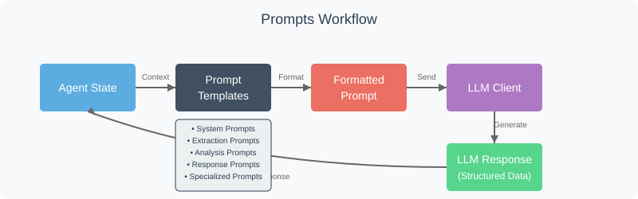

Chapter 8: Prompts
Welcome back to the EggHatch AI tutorial! In the last chapter, Agent State, we saw how the Master Agent (Orchestrator) uses a shared notebook, the Agent State, to keep track of all the information gathered as it processes your request. This state includes your original question, extracted details like your budget, and the results from specialized agents like the Trend Analysis Agent.
But how does the system actually tell the AI model what to do with this information? How does it instruct the AI to understand your question, extract details, or write a helpful response using the data collected? This is where Prompts come in.
What are Prompts?
Think of prompts as the instructions or scripts that we give to the AI model through the LLM Client. They are formatted pieces of text designed to guide the AI to perform a very specific task.
In the context of EggHatch AI, prompts are what tell the underlying Large Language Model (LLM) things like:
- "Read this user's question and tell me if they want a laptop recommendation or a PC build."
- "Here are the results from the analysis. Write a helpful summary for the user based only on this data."
- "Act as a tech assistant and keep your answers focused on PC parts."
They are the blueprints that dictate the AI's behavior and the nature of its output at various points in our system's workflow.
How Prompts Work in EggHatch AI
The Prompts system in EggHatch AI follows a structured approach to communicate with the language model:

Types of Prompts in EggHatch AI
EggHatch AI uses several types of prompts for different purposes:
System Prompts
Define the AI's role and overall behavior
Extraction Prompts
Extract specific information from user queries
Analysis Prompts
Guide specialized analysis of data
Response Prompts
Generate helpful, natural responses to users
The Prompts Implementation
Let's look at a simplified version of the Prompts management code:
class Prompts:
def __init__(self, prompt_dir="prompts"):
"""Initialize the prompts manager with a directory of prompt templates"""
self.prompt_dir = prompt_dir
self.prompts = {}
self.load_prompts()
def load_prompts(self):
"""Load all prompt templates from the prompts directory"""
try:
import os
import json
# Ensure the prompts directory exists
if not os.path.exists(self.prompt_dir):
os.makedirs(self.prompt_dir)
self._create_default_prompts()
# Load each prompt file
for filename in os.listdir(self.prompt_dir):
if filename.endswith(".json"):
prompt_name = filename[:-5] # Remove .json extension
file_path = os.path.join(self.prompt_dir, filename)
with open(file_path, 'r') as f:
prompt_data = json.load(f)
self.prompts[prompt_name] = prompt_data
print(f"Loaded {len(self.prompts)} prompts")
except Exception as e:
print(f"Error loading prompts: {str(e)}")
# Create default prompts if loading fails
self._create_default_prompts()
def _create_default_prompts(self):
"""Create default prompts if none exist"""
import os
import json
default_prompts = {
"system": {
"description": "System prompt that defines the AI's role",
"template": """You are EggHatch AI, a specialized assistant for PC and tech product recommendations.
Your goal is to help users find the best tech products for their needs and budget.
Always be helpful, accurate, and focused on tech products.
Base your recommendations only on factual information and user preferences.
If you don't know something, admit it rather than making up information."""
},
"parameter_extraction": {
"description": "Extract parameters from user query",
"template": """Extract the key parameters from the following user query.
Return the results as a JSON object with the following fields:
- budget: The maximum amount the user wants to spend (number, no currency symbol)
- product_type: The type of product they're looking for (e.g., 'laptop', 'desktop', 'monitor')
- preferences: An object containing any preferences mentioned (e.g., brand, purpose, features)
- constraints: An object containing any constraints or requirements
USER QUERY: {query}
EXTRACTED PARAMETERS:"""
},
"sentiment_analysis": {
"description": "Analyze sentiment in text",
"template": """Analyze the sentiment of the following text.
Return the results as a JSON object with the following fields:
- polarity: Either 'positive', 'negative', or 'neutral'
- score: A number between -1.0 (very negative) and 1.0 (very positive)
- aspects: An object where keys are aspects mentioned (e.g., 'battery', 'screen') and values are objects with 'polarity' and 'score'
TEXT: {text}
SENTIMENT ANALYSIS:"""
},
"topic_extraction": {
"description": "Extract topics from reviews",
"template": """Extract the main topics discussed in these product reviews.
For each topic, identify related keywords.
Return the results as a JSON object where keys are topic names and values are objects with a 'keywords' array.
REVIEWS:
{reviews}
EXTRACTED TOPICS:"""
},
"product_recommendation": {
"description": "Generate product recommendations",
"template": """Based on the user's query and the analysis results, recommend appropriate products.
Focus on matching the user's budget, preferences, and requirements.
Highlight key features and explain why each recommendation is suitable.
USER QUERY: {query}
EXTRACTED PARAMETERS:
{parameters}
MATCHING PRODUCTS:
{products}
SENTIMENT ANALYSIS:
{sentiment}
TREND ANALYSIS:
{trends}
RECOMMENDATIONS:"""
},
"final_response": {
"description": "Generate final response to user",
"template": """Create a helpful, conversational response to the user's query.
Include the recommended products and explain why they match the user's needs.
Mention relevant insights from review analysis if available.
Keep the tone friendly but professional, and focus on being informative.
USER QUERY: {query}
RECOMMENDATIONS:
{recommendations}
RESPONSE:"""
}
}
# Create the prompts directory if it doesn't exist
if not os.path.exists(self.prompt_dir):
os.makedirs(self.prompt_dir)
# Save each default prompt to a file
for prompt_name, prompt_data in default_prompts.items():
file_path = os.path.join(self.prompt_dir, f"{prompt_name}.json")
with open(file_path, 'w') as f:
json.dump(prompt_data, f, indent=2)
self.prompts[prompt_name] = prompt_data
def get_prompt(self, prompt_name):
"""Get a prompt template by name"""
if prompt_name in self.prompts:
return self.prompts[prompt_name]["template"]
else:
raise ValueError(f"Prompt '{prompt_name}' not found")
def format_prompt(self, prompt_name, **kwargs):
"""Format a prompt template with the provided variables"""
template = self.get_prompt(prompt_name)
try:
return template.format(**kwargs)
except KeyError as e:
missing_key = str(e).strip("'")
raise ValueError(f"Missing required variable '{missing_key}' for prompt '{prompt_name}'")
def add_prompt(self, prompt_name, description, template):
"""Add a new prompt or update an existing one"""
import os
import json
self.prompts[prompt_name] = {
"description": description,
"template": template
}
# Save the prompt to a file
file_path = os.path.join(self.prompt_dir, f"{prompt_name}.json")
with open(file_path, 'w') as f:
json.dump(self.prompts[prompt_name], f, indent=2)
return True
def list_prompts(self):
"""List all available prompts with their descriptions"""
return {name: data["description"] for name, data in self.prompts.items()}
Key Features of the Prompts System
Templating
Uses dynamic templates that can be filled with specific data
Modularity
Organizes prompts by function for easy management
Customization
Allows prompts to be modified or added without code changes
Persistence
Stores prompts in files for easy version control
Example: Prompts in Action
Let's see how prompts are used in a real interaction:
User Query:
"I need a gaming laptop under $1500 with good battery life for college."
Parameter Extraction Prompt:
Extract the key parameters from the following user query. Return the results as a JSON object with the following fields: - budget: The maximum amount the user wants to spend (number, no currency symbol) - product_type: The type of product they're looking for (e.g., 'laptop', 'desktop', 'monitor') - preferences: An object containing any preferences mentioned (e.g., brand, purpose, features) - constraints: An object containing any constraints or requirements USER QUERY: I need a gaming laptop under $1500 with good battery life for college. EXTRACTED PARAMETERS:
LLM Response:
{
"budget": 1500,
"product_type": "laptop",
"preferences": {
"purpose": ["gaming", "college"],
"features": ["good battery life"]
},
"constraints": {}
}
This example shows how a well-crafted prompt can guide the AI to extract structured information from a simple user query.
The Art of Prompt Engineering
Creating effective prompts is both an art and a science. Here are some key principles EggHatch AI follows:
- Clarity: Prompts should provide clear, unambiguous instructions
- Specificity: Specify exactly what format and information you want returned
- Context: Include relevant context from the Agent State
- Examples: For complex tasks, include examples of desired outputs
- Constraints: Set boundaries on what the AI should and shouldn't do
- Role Definition: Define the AI's role and perspective clearly
Conclusion: The Complete EggHatch AI System
Congratulations! You've now explored all the key components of the EggHatch AI system:
- The User Interface that you interact with
- The Master Agent that orchestrates the entire process
- The LLM Client that communicates with the AI model
- The Data Pipeline that prepares data for analysis
- The Sentiment Analysis Agent that understands emotions in reviews
- The Trend Analysis Agent that identifies patterns and topics
- The Agent State that maintains context throughout the process
- The Prompts that guide the AI's behavior and responses
Together, these components create a powerful system that can understand your tech needs, analyze product information and reviews, and provide personalized recommendations.
We hope this tutorial has given you a good understanding of how EggHatch AI works under the hood. If you're interested in exploring further, check out the GitHub repository for the complete code.
Happy tech shopping with EggHatch AI!